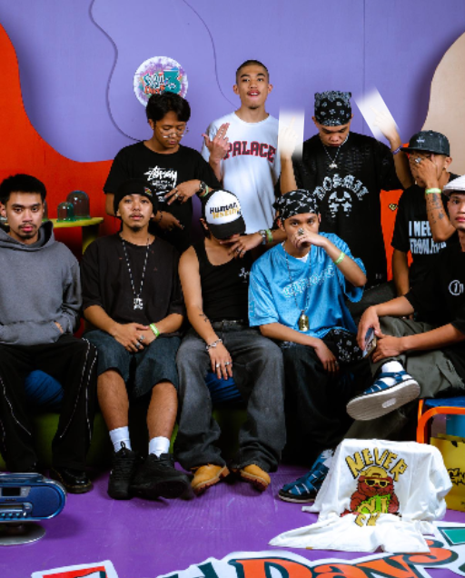

About Us
A business about Design and Fashion.
Services
We ship & supply worldwide 🌍
Worldwide Delivery Service via DHL 
Local Delivery Service via JnT
Our Story
Recycled Rags was created during the pandemic. It started as our hobby selling popular brands of clothes among skaters in Baguio. Earning a little cash that will feed us for the day. After a few months, the group decided to make it a business. They came up with the name and the logo, and we created our social media business in May 2020. We were selling popular brands like Adidas, Vans, etc. A few months later, in 2021, we discovered fashion and decided to invest in vintage, archive pieces, and luxury brands. Over the years, our business and group kept growing.